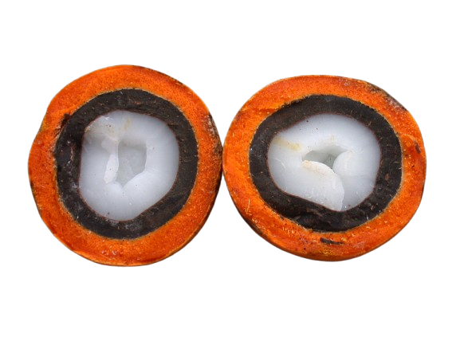

Isabela Kristina apresenta a BIOTUCUN, surge com o propósito de transformar os resíduos do tucumã em soluções sustentáveis para a cadeia cosmética.
A BIOTUCUN propõe o reaproveitamento desses materiais amazônicos na produção de bioesferas naturais biodegradáveis para aplicação em cosméticos, oferecendo uma alternativa sustentável às microesferas sintéticas.
Mais do que desenvolver insumos sustentáveis, a BIOTUCUN busca fortalecer a bioeconomia amazônica, gerar valor a partir de resíduos e incentivar a valorização da floresta em pé.
Nos últimos cinco anos, a produção do fruto tem sofrido oscilações devido a fatores climáticos, como a seca. Em contrapartida, o consumo em Manaus apresentou um crescimento médio de 22% ao ano, aumentando tanto o valor de mercado quanto o volume de resíduos gerados. Considerar esses resíduos como fonte de valor é uma proposta inovadora, especialmente porque, embora o tucumã tenha seu potencial reconhecido nas indústrias cosmética e alimentícia, suas sobras ainda são usadas apenas como ração, adubo (casca) ou material artesanal (amêndoa) — apesar de estudos apontarem seu uso como biocombustível.
A BIOTUCUN, dentro de suas atuais limitações laboratoriais e industriais, já realizou testes com os resíduos da casca do tucumã, comprovando seu potencial como esferas esfoliantes para cosméticos. Essa matéria-prima ainda passará por novas análises para identificar seus bioativos, com o objetivo de agregar valor terapêutico ao produto final. Futuramente, também serão estudadas a amêndoa e a semente do fruto. Após a finalização dos testes, o produto será direcionado a indústrias cosméticas, lojas de matérias-primas e farmácias de manipulação. A proposta da Biotucun é gerar valor a partir de resíduos, contribuir para a preservação da floresta em pé, reduzir impactos ambientais e fortalecer a economia local, com perspectivas de expansão para o mercado nacional.
Ser uma referência em bioinovação na Amazônia, liderando o desenvolvimento de soluções sustentáveis a partir de resíduos e contribuindo para a conservação da floresta em pé e o fortalecimento da bioeconomia. A empresa busca transformar a percepção de valor sobre os subprodutos naturais amazônicos, criando cadeias produtivas circulares que beneficiem comunidades locais e o mercado consumidor.
Aproveitar resíduos da biodiversidade amazônica para desenvolver insumos sustentáveis e inovadores, agregando valor às cadeias produtivas e promovendo impacto ambiental, social e econômico positivo.
A empresa compromete-se com a sustentabilidade e o uso consciente dos recursos naturais, buscando inovação que transforma resíduos em valor real. A organização respeita e exalta a riqueza amazônica, conduzindo suas ações com ética e transparência. Além disso, gera oportunidades para comunidades locais, fortalecendo economias regionais, sempre com base em pesquisa científica e excelência técnica.